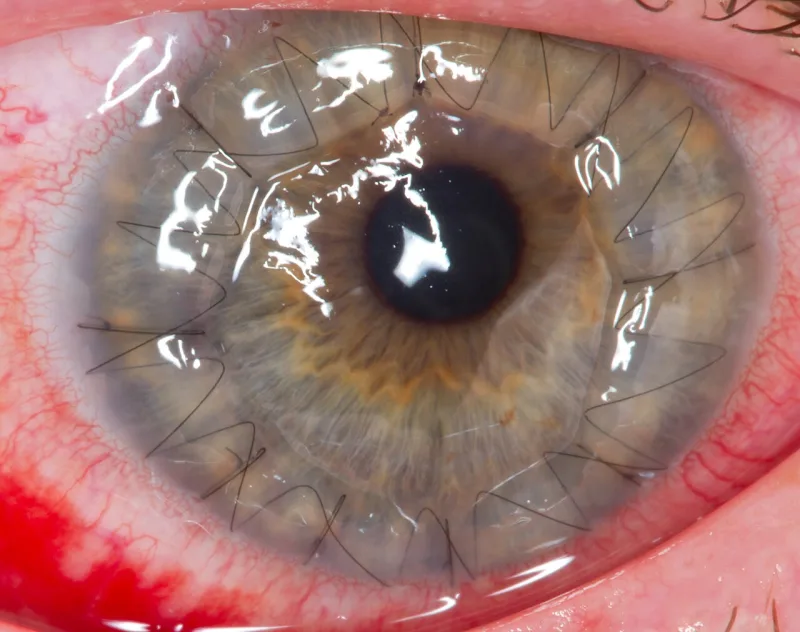
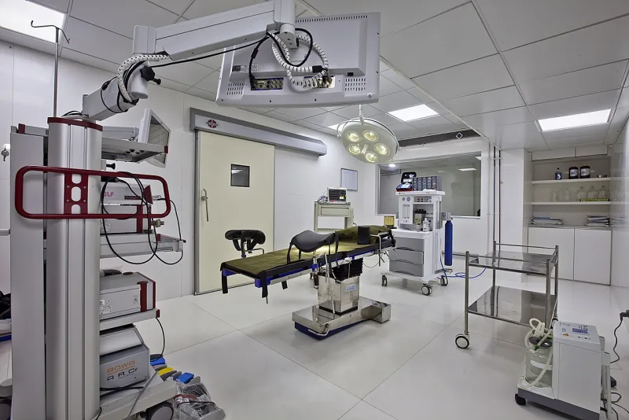

The Watchtower's own publications admit these facts. You can make this point from their library alone.
The Watchtower of Nov 15, 1967 (pp. 702-704) called organ transplants a form of cannibalism.
Those who accept them, it said, are "living off the flesh of another human. That is cannibalistic" and a practice abhorrent to civilized people.
Awake! of June 8, 1968 (p.
21) reinforced the ban.
For thirteen years Witnesses turned down kidneys and corneas. Then The Watchtower of Mar 15, 1980 (p.
31) reclassified transplants. They became a matter for personal decision.
The reason given was that no scripture forbids them. That was equally true in 1967.
There was no apology, and no account of what had changed in the Bible.
In 1967 transplantation was new, experimental and argued over in secular medicine as well. The first heart transplant was weeks away, and anti-rejection drugs barely existed.
The 1967 piece was guidance for conscience, and in most cases refusing was not a disfellowshipping matter. When the medicine matured, the question went back to the individual, where it has stayed for 45 years.
An organization saying "this is your decision now" is loosening its grip, not tightening it.
The words "cannibalistic" and "abhorrent" are not guidance. And the strongest point in their defense cuts against them.
A body that is uncertain about a new medical question should say it is uncertain. It should not issue rulings that members obey with their bodies.
The same pattern governed vaccination, condemned in 1931 and permitted in 1952.
They admit this themselves, because both rulings are theirs. It matters most as precedent.
The identical authority structure governs blood today, and blood has an ongoing body count. This case proves the structure can be wrong for thirteen years at a time.
"Between 1967 and 1980, what changed in the Bible about transplants? Not in the medicine — in the Bible."


Transplants were new and untested in 1967, and 1980 handed the choice back.
Defenders frame 1967 differently. The Questions From Readers piece gave a strong moral opinion. Transplants were then new, untried, and argued over in secular medicine as well. The first heart transplant was weeks away. Anti-rejection drugs barely existed. The counsel was framed as guidance for conscience. In most cases refusing was not a disfellowshipping matter.
When the medicine matured, the Society moved the question back to the individual. That is the right resting place, and it has stayed there for 45 years. A body willing to say 'this is now your decision' is loosening its grip, not tightening it. The 1980 ruling is the system correcting itself.
They admit it themselves. The same structure governs blood, which still costs lives.
Both rulings are Watchtower text. Nothing is in doubt about what was taught, only about how to describe it. And the 1967 wording shuts off the 'mere guidance' reading. The words were 'cannibalistic' and 'abhorrent.' So does the enforcement culture of the era, documented in AJWRB's case histories.
The steelman's strongest point is that transplant medicine was genuinely new. That indicts rather than excuses. A body unsure about a new medical question should say so. It should not issue rulings as God's channel that members obey with their bodies.
This case matters beyond itself. The same authority structure governs blood today, and blood has an ongoing body count. The transplant reversal proves the structure can be wrong for thirteen years at a time.